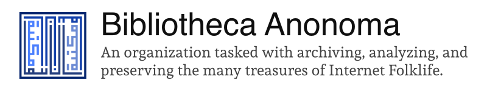

wiki
archives
tools
blog
Bibliotheca Anonoma
The Bibliotheca Anonoma is a wikified library of the internet's treasures.
BASC-Archiver
BASC-Archiver is a Python-based imageboard thread archiver (currently supporting 4chan).
chan.arc
chan.arc is an in-development standard for image board thread archiving.